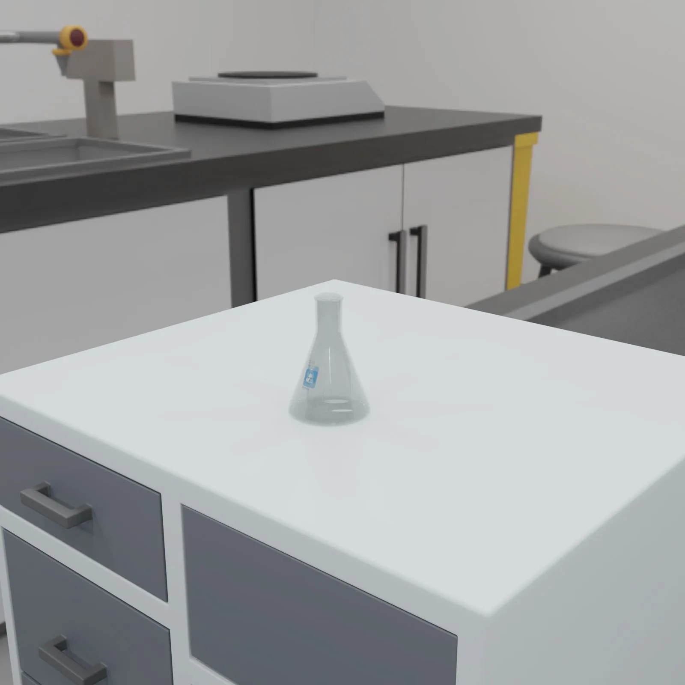
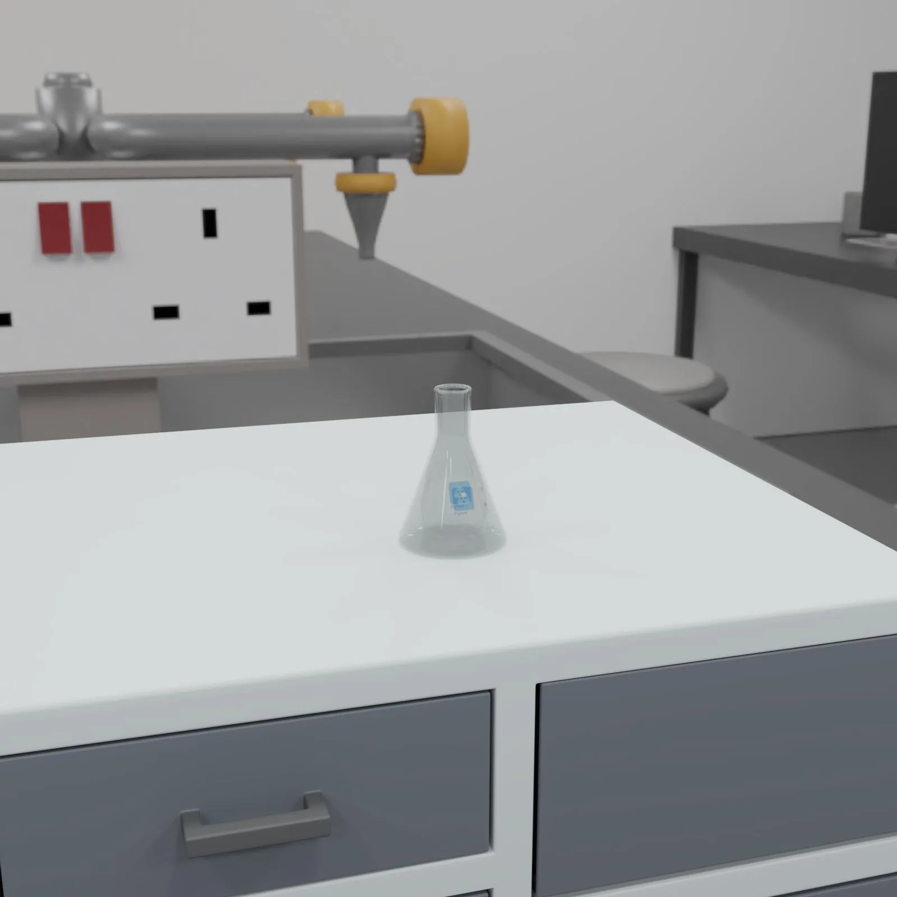
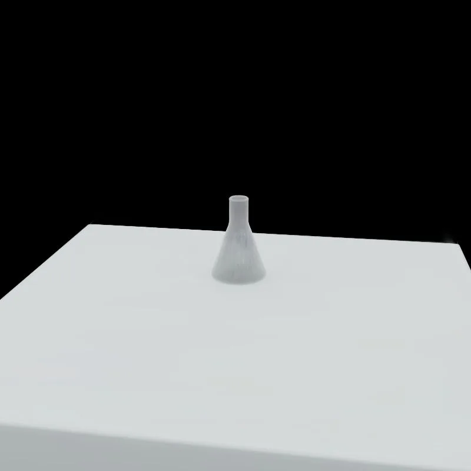
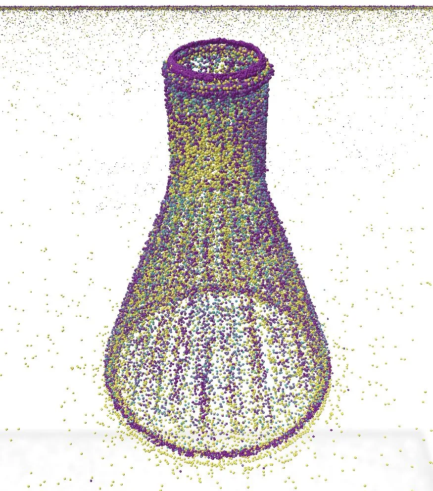
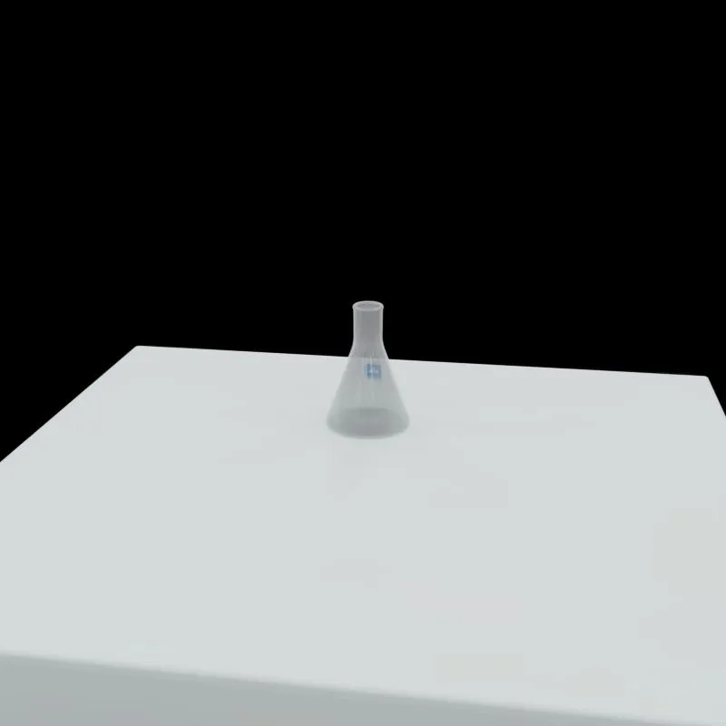

Geometry Gaussians：解耦 Gaussian Splatting 中的外观与几何Geometry Gaussians: Decoupling Appearance and Geometry in Gaussian Splatting
与 3DGS 地图几何化、3DGS-SLAM 后端和高质量三维重建高度相关，且方法轻量易迁移。
一句话工作总结
通过给每个 Gaussian 增加独立几何不透明度，缓解 3DGS 外观渲染与几何表面表达之间的冲突。
摘要
该工作指出标准 3DGS 天然不适合同时表达纹理外观和准确几何，直接提取表面信息常会牺牲渲染质量。作者为每个 splat 增加独立的几何不透明度参数，并配合透明区域优化流程，使 appearance opacity 与 geometry opacity 分离，从而在多类数据、尤其透明物体场景中同时提升渲染和几何表现。
After the success of 3D Gaussian Splatting (3DGS) for novel view synthesis, many works have explored how to also use it for geometric surface representation. However, extracting accurate geometric information directly from 3DGS remains challenging and can often reduce the appearance rendering quality. In this work, we show that 3DGS in its default form is inheritedly unsuited to represent texture and geometry at the same time, by training with complete ground-truth texture and geometry information. We also propose a simple solution by applying a single additional geometry opacity parameter to each splat, together with an optional transparency-curated optimization pipeline. Our experiments, both with ground-truth and vision foundation model geometric input, show that this change leads to improved rendering and geometry performance on a wide variety of dataset, and especially complex scenes with transparent objects benefit significantly from our method.
中文解读摘录
- 日期：2026-06-04
- 链接：arXiv / PDF
- 作者简写：H. Zhou, Z. Lähner
- 领域标签：三维重建 / 3DGS / 几何表示 / 透明物体
- 背景/动机：标准 3DGS 同时承担外观渲染和几何表面表达时会互相牵制，直接从 splat 中提取准确几何常导致渲染质量下降；透明/半透明区域尤其容易退化。
- 主要创新点/工作：为每个 splat 增加独立的 geometry opacity，将 appearance opacity 与 geometry opacity 解耦，并配合可选的 transparency-curated optimization pipeline；实验同时使用 GT 几何和视觉基础模型几何输入。
- 为什么值得关注：对 3DGS-SLAM/3DGS mapping 后端很关键——SLAM 不只要渲染好看，还要稳定表面、深度、mesh 和可交互几何。该思路可作为把渲染型 3DGS 改造成几何地图的轻量改法。
图表/页面预览

{kind=link}

{kind=link}

{kind=link}

{kind=link}

{kind=link}
